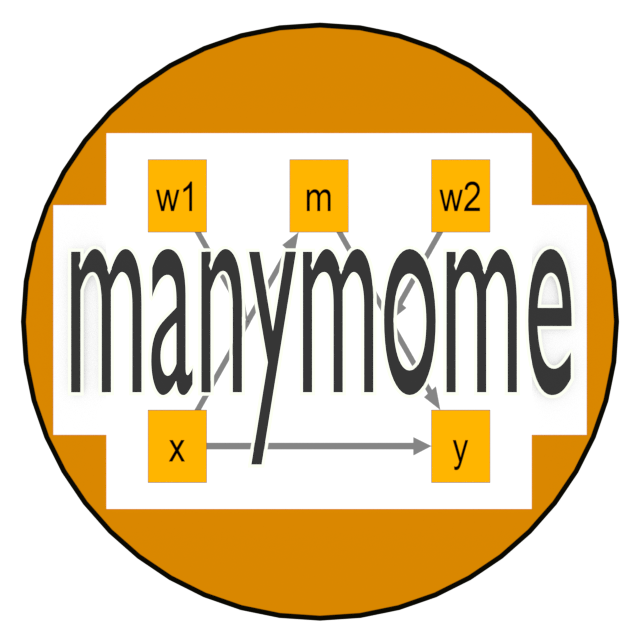

Sample Dataset: A Latent Variable Moderated Mediation Model With 4 Factors
Source:R/dat_sem_mome.R
data_sem_mome.RdThis data set is for testing functions for moderated mediation among latent variables.
Format
A data frame with 500 rows and 16 variables:
- x1
Indicator. Numeric.
- x2
Indicator. Numeric.
- x3
Indicator. Numeric.
- x4
Indicator. Numeric.
- w1
Indicator. Numeric.
- w2
Indicator. Numeric.
- w3
Indicator. Numeric.
- w4
Indicator. Numeric.
- m1
Indicator. Numeric.
- m2
Indicator. Numeric.
- m3
Indicator. Numeric.
- m4
Indicator. Numeric.
- y1
Indicator. Numeric.
- y2
Indicator. Numeric.
- y3
Indicator. Numeric.
- y4
Indicator. Numeric.
Examples
data(data_sem_mome)
mod <-
"
fx =~ x1 + x2 + x3 + x4
fw =~ w1 + w2 + w3 + w4
fm =~ m1 + m2 + m3 + m4
fy =~ y1 + y2 + y3 + y4
fm ~ fx + fw + fx:fw
fy ~ fm + fx
"
library(lavaan)
fit <- sam(model = mod, data = data_sem_mome)
summary(fit)
#> This is lavaan 0.6-21 -- using the SAM approach to SEM
#>
#> SAM method LOCAL
#> Mapping matrix M method ML
#> Number of measurement blocks 4
#> Estimator measurement part ML
#> Estimator structural part ML
#>
#> Number of observations 500
#>
#> Summary Information Measurement + Structural:
#>
#> Block Latent Nind Chisq Df
#> 1 fm 4 1.912 2
#> 2 fw 4 3.416 2
#> 3 fx 4 1.782 2
#> 4 fy 4 2.332 2
#>
#> Model-based reliability latent variables:
#>
#> fx fw fm fy
#> 0.887 0.881 0.706 0.831
#>
#> Summary Information Structural part:
#>
#> chisq df cfi rmsea srmr
#> 42.373 2 0.977 0.201 0.015
#>
#> Parameter Estimates:
#>
#> Standard errors Local
#> Information Expected
#> Information saturated (h1) model Structured
#>
#> Regressions:
#> Estimate Std.Err z-value P(>|z|)
#> fm ~
#> fx 0.401 0.046 8.699 0.000
#> fw -0.010 0.030 -0.326 0.744
#> fx:fw 0.490 0.052 9.385 0.000
#> fy ~
#> fm 0.446 0.135 3.304 0.001
#> fx 0.029 0.072 0.398 0.691
#>
#> Covariances:
#> Estimate Std.Err z-value P(>|z|)
#> fx ~~
#> fw -0.016 0.034 -0.477 0.634
#> fx:fw -0.005 0.061 -0.087 0.930
#> fw ~~
#> fx:fw 0.036 0.058 0.630 0.529
#>
#> Intercepts:
#> Estimate Std.Err z-value P(>|z|)
#> fx:fw -0.016 0.034 -0.477 0.634
#>
#> Variances:
#> Estimate Std.Err z-value P(>|z|)
#> fx 0.643 0.107 6.024 0.000
#> fw 0.695 0.058 11.929 0.000
#> .fm 0.007 0.013 0.556 0.578
#> .fy 0.395 0.035 11.290 0.000
#> fx:fw 0.436 0.106 4.098 0.000
#>